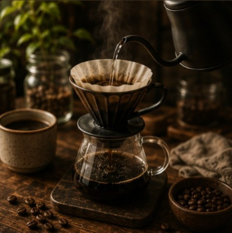
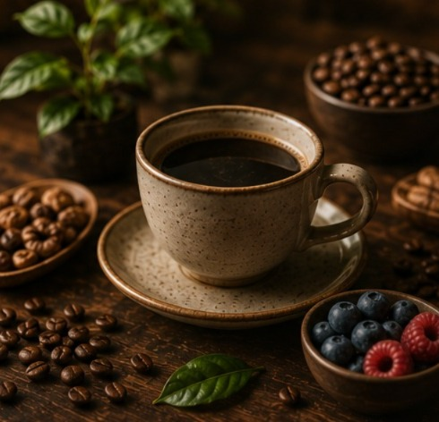
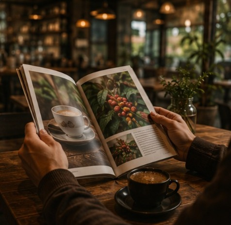

Descubre el mundo detrás de cada taza

Aprende diferentes métodos para preparar café, desde técnicas tradicionales hasta nuevas formas de disfrutar una taza perfecta.

El café es una bebida natural que forma parte de nuestra cultura. Conoce sus características, propiedades y la importancia de elegir granos de calidad.

Conoce novedades, eventos, nuevos productos y todo lo relacionado con nuestra cafetería.